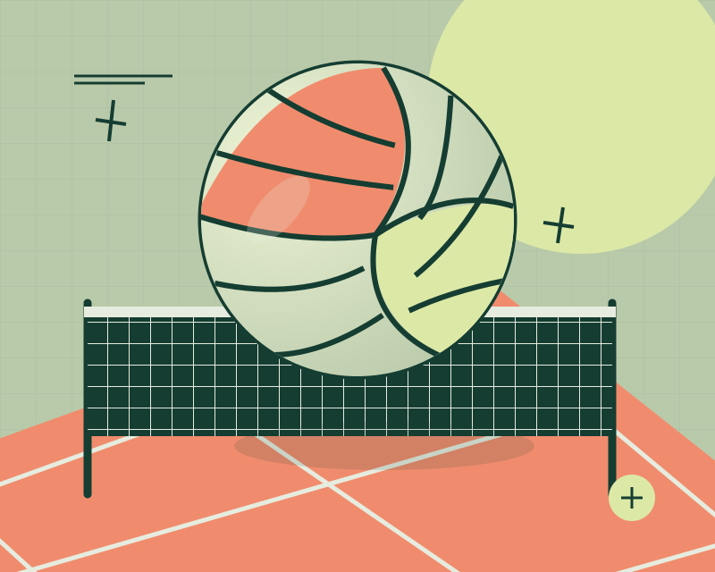
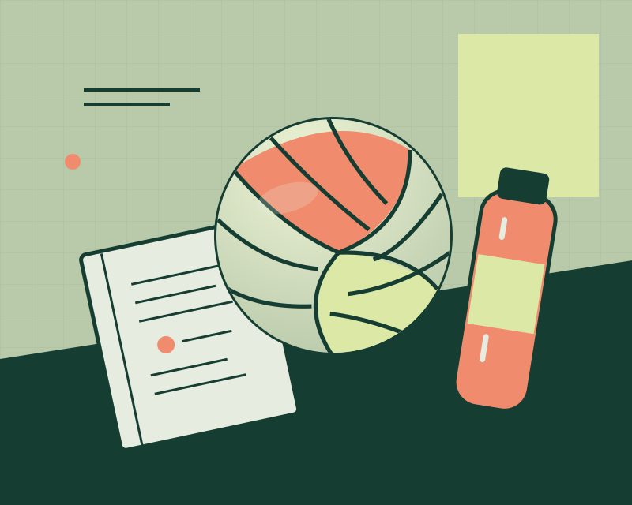
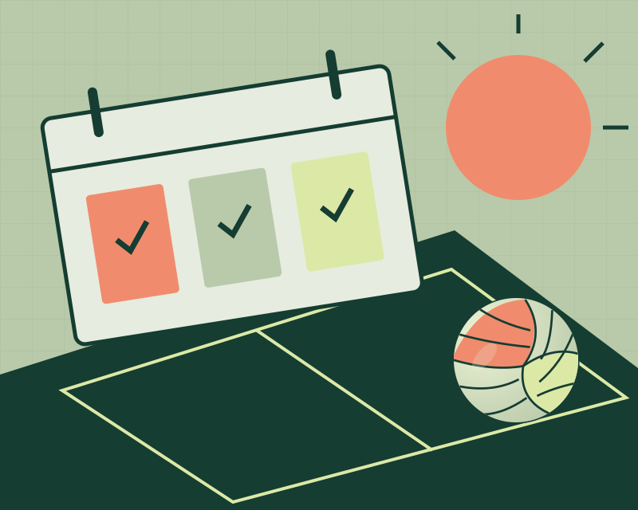
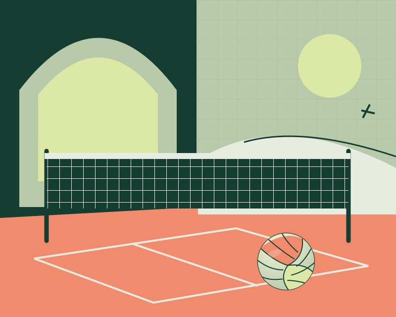
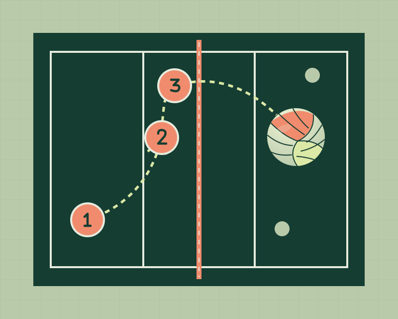
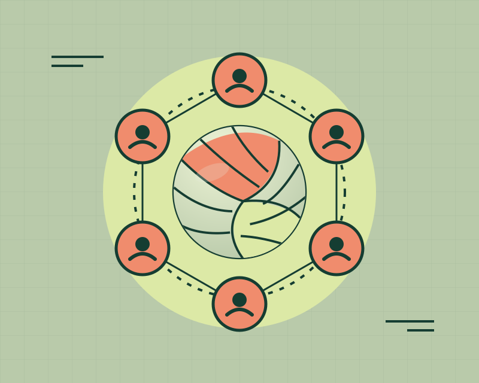

Home
The game / The people / The next point
Every Touch.
A Better Rally.
A good rally is a conversation: read the play, make your touch, trust the next person. That is what makes volleyball worth coming back to.
Welcome to my courtside field guide. I’m Himmat Grewal, and this is a place to explore the game, build the basics and find a reason to play.

AI-assisted SVG illustration. Brief: Create an original geometric volleyball poster: a large paneled ball floating over a net and a coral court, using forest green, sage and pale lime.
- 06Players per side in standard indoor play
- 03Team contacts to build an attack
- 01Shared goal: keep the rally alive
What Is Volleyball?
Two teams send a ball across a net, trying to land it in the other team’s court. A rally starts with a serve; each side has up to three team hits to return the ball. Standard indoor volleyball uses six players on each side. Beach doubles uses two.
Passing, setting and attacking turn individual touches into a team play. The game can be competitive, but a casual rally is a great place to begin.
Rules reference: USA Volleyball’s guide to the game. Formats and local rules can differ.
About
Who / Himmat Grewal
A Student.
A Teammate.
Always Learning.
I’m Himmat, a UNC Charlotte student with an interest in volleyball. I like that the sport rewards both quick decisions and patient practice.
This guide is my take on the hobby: understand the game, show up ready to learn, and make the next touch a little more useful than the last one.
My Focus on the Court
- Consistency: aim for a controlled first contact.
- Communication: call the ball early and clearly.
- Teamwork: encourage the player taking the next touch.

AI-assisted SVG illustration. Brief: Draw a flat vector still life of a volleyball, a water bottle and a practice notebook in the same forest, sage and coral palette.
Room for Beginners
You do not need a highlight reel to belong in a recreational game. Ask about the group’s level, learn the rotation, and bring a willingness to listen. A patient group makes learning much easier.
Best Times
When / Find a rhythm
Small Sessions.
Steady Progress.
The best time to play is a time you can actually make. Start with an available court, a willing partner and one clear thing to practice.
Indoor sessions make it easier to plan around weather. For outdoor games, check the forecast and court conditions before leaving. For either setting, confirm open recreation hours instead of assuming a court is free.
Check current UNC Charlotte UREC hours before planning a visit.

AI-assisted SVG illustration. Brief: Illustrate a three-block practice calendar beside a sunlit court with one volleyball, using the same geometric shapes and palette.
| Session | Focus | A Simple Goal |
|---|---|---|
| Early Week | Partner passing | Keep a short rally controlled and call each ball. |
| Midweek | Serving practice | Choose a target area and notice where each serve lands. |
| Weekend | Recreational play | Use one skill from practice in a real rally. |
This is a flexible example, not an official UREC schedule or a required training plan. Adjust it to your availability and the court’s posted schedule.
Places to Play
Where / Charlotte and beyond
Find a Court.
Find Your People.
A great place to start is close to where you already spend time. For UNC Charlotte students, University Recreation is a useful first stop.
Look for a session that matches your experience. A beginner-friendly open game is a better learning environment than guessing your way into a competitive match.
The illustration is conceptual; it is not a photograph or map of a Charlotte facility.

AI-assisted SVG illustration. Brief: Create a split indoor and outdoor volleyball scene, with an arched gym on the left, sand and sun on the right, and one net connecting the composition.
Campus Recreation
UNC Charlotte UREC lists indoor and outdoor volleyball equipment among its checkout options. Check the open recreation information for locations, availability and access details.
Organized Campus Play
Check the current intramural offerings when you want scheduled games. Sports, registration periods and eligibility can change, so use the live listing.
A Local Court
For a community gym or sand court, confirm public access, any reservation rules and the playing surface before arriving. Ask the group whether beginners are welcome.
Bring a ball if equipment is not provided, and leave the court ready for the next group.
How to Play
How / Start with the next touch
Control First.
Power Later.
A playable ball gives your teammate options. Learn the purpose of each contact before worrying about a spectacular finish.
- PassReceive the ball and direct it toward a teammate who can set. Call it early so two players do not chase the same touch.
- SetPlace a controlled ball where a teammate can send it across the net. The goal is to make the next contact easier.
- AttackSend the ball into the other court. A controlled placement can be more useful than swinging as hard as possible.

AI-assisted SVG illustration. Brief: Draw a top-down volleyball court with three numbered contacts and a dotted path from pass to set to attack; this is a simplified concept, not a rotation diagram.
Before and After
A serve begins the rally. Once your side sends the ball over, get ready to defend and cover open space. In indoor play, a team rotates clockwise when it wins the right to serve from the receiving team.
Pass–set–attack is a helpful pattern, not a requirement to use all three hits. Learn your group’s rules and practice with someone who can give feedback.
Read the official rules overview for formats and exceptions.
Why Volleyball
Why / More than the scoreboard
The Best Part
Is the We.
Volleyball turns a group of individual players into a team one contact at a time. Even a simple rally feels good when everyone helps keep it going.
What draws me to the game is that progress is easy to notice. A clearer call, a steadier pass or a better decision can change the next play.
- Connection: you have to pay attention to other people.
- Focus: the next ball asks for your full attention.
- Perspective: one mistake is just one play; the next rally is a fresh start.

AI-assisted SVG illustration. Brief: Illustrate six abstract player symbols in a connected circle around a volleyball to represent communication and teamwork, using the same geometric style.
“Make your next touch something a teammate can build on.”
An original motto for this guide. It is a good goal for the court, and for working with people anywhere.
AI Prompts
Process / Clear about the tools
A Human Interest.
An AI-Assisted Build.
This site was created with ChatGPT/Codex assistance for the HTML, embedded CSS, JavaScript, written content and original SVG illustrations.
The assignment requirements and volleyball topic guided the build. All artwork was created as vector code for this site; no stock photos, downloaded artwork or image-generation service were used.
The prompt summaries below describe how AI helped plan, write, illustrate and check this site. Every figure also includes the brief for its individual illustration.
AI-assisted SVG illustration. Brief: Draw a website design playbook with a volleyball sketch, layout lines and color swatches, keeping the forest green, sage and coral visual system.
Planning the Site
Help me create a volleyball hobby website with sections for Home, About, Best Times, Places to Play, How to Play, Why Volleyball and AI Prompts.
Explaining the Game
Explain volleyball basics in clear, beginner-friendly language. Include an example practice week, teamwork tips and official resources for finding places to play at UNC Charlotte.
Creating the Look
Use forest green, sage and coral with matching original volleyball illustrations and a favicon. Make the layout easy to read on phones and computers, and include captions and image descriptions.
Making It Work
Show one section at a time, open Home first and update the page title when a section changes. Check the HTML, CSS, links and keyboard navigation.
Sources and Attribution
Rule summaries reference USA Volleyball. Campus information links to UNC Charlotte University Recreation. All illustrations are original AI-assisted SVG code created for this project in October 2026.